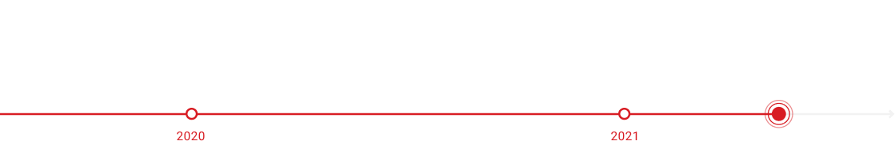

Leading
LiDAR Perception
Software Provider
VUERON
Our mission is
to make people safer.
On a mission to make people safer by providing the best LiDAR solution.
Based on AI algorithms, Vueron has developed a high-performance, stable, and practical LiDAR perception software to
identify all objects around sensor. We believe in making the safer road, home, city, and county with Vueron solution.
We've been
growing like this.
